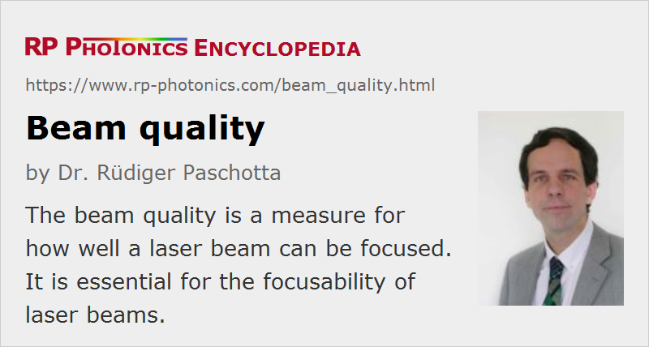

Beam Quality
Definition: a measure for how well a laser beam can be focused
German: Strahlqualität
How to cite the article; suggest additional literature
Author: Dr. Rüdiger Paschotta
The beam quality of a laser beam is an important aspect of laser beam characterization. It can be defined in different ways, but is normally understood as a measure of how tightly a laser beam can be focused under certain conditions (e.g. with a limited beam divergence). The most common ways to quantify the beam quality are:
- the beam parameter product (BPP), i.e., the product of beam radius at the beam waist with the far-field beam divergence angle
- the M2 factor, defined as the beam parameter product divided by the corresponding product for a diffraction-limited Gaussian beam with the same wavelength
Low values of BPP or M2 factor imply a high beam quality.
A high beam quality implies smooth wavefronts (i.e., strong phase correlation across the beam profile), such that focusing the beam with a lens allows one to obtain a focus where the wavefronts are plane. Scrambled wavefronts (see Figure 1) make beam focusing more difficult, i.e., the beam divergence for a given spot size is increased.
The highest possible beam quality in terms of M2 is achieved for a diffraction-limited Gaussian beam, having M2 = 1. That value is closely approached by many lasers, in particular by solid-state bulk lasers operating on a single transverse mode (→ single-mode operation) and by fiber lasers based on single-mode fibers, also by some low-power laser diodes (particularly VCSELs). On the other hand, in particular some high-power lasers (e.g. solid-state bulk lasers and semiconductor lasers such as diode bars) can have a very large M2 of more than 100 or even well above 1000. In solid-state lasers, this is often a result of thermally induced wavefront distortions in the gain medium and/or a mismatch of effective mode area and pumped area in the laser crystal, whereas in high-power semiconductor lasers the poor beam quality results from operation with a highly multimode waveguide. In both cases, the poor beam quality is associated with the excitation of higher-order resonator modes.
In the focus (beam waist) of a diffraction-limited beam (i.e., at the location where the beam radius reaches its minimum), the optical wavefronts are flat. Any scrambling of the wavefronts, e.g. due to optical components with poor quality, spherical aberrations of lenses, thermal effects in a gain medium, diffraction at apertures, or by parasitic reflections, can spoil the beam quality. For monochromatic beams, the beam quality could in principle be restored e.g. with a phase mask which exactly compensates the wavefront distortions, but this is usually difficult in practice, even in cases where the distortions are stationary. A more flexible approach is to use adaptive optics in combination with a wavefront sensor.
It is possible to some extent to improve the beam quality of a laser beam with a non-resonant mode cleaner or a mode cleaner cavity. This, however, leads to some loss of optical power.
The brightness of a laser, or more precisely its radiance, is determined by its output power together with its beam quality.
Note that the term beam quality is sometimes used with a qualitative meaning which has little to do with the focusability as discussed above. For some applications, it is vital to obtain a smooth beam intensity profile, e.g. of Gaussian shape, whereas the beam divergence is not of interest. The “quality” of a laser beam may then not be characterized e.g. with an M2 as discussed below: one beam may have a relatively small M2 value but a multi-peaked beam profile, whereas another beam may have a smooth beam shape but a high divergence and thus a large M2 value.
Some laser applications such as lithography require the uniform illumination of a large area. If the term beam quality appears in that context, it may have nothing to do with focusability as discussed in this article. One may then even prefer beams with a rather low spatial and temporal coherence.
Measurement of Beam Quality
According to ISO Standard 11146, the beam quality factor M2 can be calculated with a fitting procedure, applied to the measured evolution of the beam radius along the propagation direction (the so-called caustic, see Figure 2). For correct results, a number of rules have to be observed, e.g. concerning the exact definition of the beam radius and the placing of data points.
There are commercially available beam profilers which can automatically perform beam quality measurements within a few seconds. They are normally based on the measurement of the beam profile at different positions. Beam profilers based on different measurement principles, e.g. CCD and CMOS cameras or rotating knife edges or slits, differ considerably in terms of the allowed ranges of beam radius and optical power, wavelength range, sensitivity to artifacts, etc. For example, slit or knife-edge scanners can usually handle higher powers than cameras and can be precise for nearly Gaussian-shaped beams, whereas camera-based systems are usually more appropriate for complicated beam shapes. Other issues come into play for beams with temporally varying powers, e.g. for the output of Q-switched lasers. It may then be necessary to synchronize a shutter with the laser pulses.
Instead of a moving a detector through the beam, one can use a spatial light modulator to avoid any moving parts [8].
Alternative measurement methods are based on the transmission through a mode-matched passive optical resonator or on wavefront sensors, e.g. Shack–Hartmann wavefront sensors. The full characterization of the laser beam then only requires analysis in a single plane.
Importance of Beam Quality for Applications
A high beam quality can be important e.g. when strong focusing of a beam is required. In the area of laser material processing, printing, marking, cutting and drilling require high beam qualities, whereas welding and various kinds of surface treatment are less critical in this respect, because they work with larger spots, so that direct application of high-power laser diodes with comparatively poor beam quality (direct diode lasers) is possible. For cutting and remote welding, a relatively high beam quality (with M2 not much larger than 10) makes it possible to use a large working distance (i.e., a large distance between workpiece and focusing objective), which is highly desirable e.g. in order to protect the optics against debris and fumes. Also, a high beam quality reduces the beam diameters in a beam delivery system, so that smaller and thus cheaper optical elements (e.g. mirrors and lenses) can be used. Furthermore, the increased effective Rayleigh length (for a given spot size) increases the tolerance for longitudinal alignment.
A large working distance, made possible by a high beam quality, is also important for the design of diode-pumped lasers when the pump beam has to go through various pieces of optics (e.g. a dichroic mirror) before reaching the laser crystal.
A very high (close to diffraction-limited) beam quality, associated with a high spatial coherence, is often required for interferometers, optical data recording, laser microscopy, and the like.
Mode-locked lasers always have to have a high beam quality, since the excitation of higher-order transverse modes would disturb the pulse formation process.
Typical Beam Quality of Certain Lasers
Generally, the beam quality is not determined by the type of laser, but there are some typical trends:
- Most low-power diode-pumped solid-state lasers exhibit a high (close to diffraction-limited) beam quality.
- The same applies to various gas lasers such as helium–neon lasers and CO2 lasers.
- Some high-power solid-state lasers exhibit a poor beam quality, essentially because strong thermal effects in the laser crystal lead to beam distortions. Also, there can be design trade-off between high beam quality and high power efficiency, or high beam quality and low alignment sensitivity.
- Low-power laser diodes normally have a rather high beam quality, whereas high-power laser diodes basically always have a poor beam quality. Essentially, this is because high powers require large emitting apertures which make the used waveguides highly multimode. (The numerical aperture cannot be strongly reduced.)
Optimizing Laser Beam Quality
Crucial factors for obtaining a high beam quality from a solid-state bulk laser are:
- an optimized resonator design with suitable mode area (particularly in the gain medium) and low sensitivity to thermal lensing
- good resonator alignment
- minimized thermal effects, particularly from thermal lensing in the gain medium
- high-quality optical components (particularly concerning the gain medium)
- an optimized pump intensity distribution (sometimes requiring a pump source with good beam quality) – more easily achieved with end pumping than with side pumping
Beam Quality in Nonlinear Optics
Beam quality is an issue not only for lasers, but also for nonlinear frequency conversion. While thermal lensing in nonlinear crystal materials occurs only at very high average power levels (because heating occurs only through weak parasitic absorption), the beam quality can be affected by other effects:
- Spatial walk-off can spatially shift the interacting beams, so that the overlap becomes weaker, and the interaction becomes spatially asymmetric.
- For strong conversion e.g. in a frequency doubler or an optical parametric amplifier, there can be strong depletion of the pump beam near the beam axis or even backconversion, in extreme cases leading to pronounced ring structures. Gain guiding can make such problems more severe. Beam quality issues have been shown to limit the power scalability of high-gain nonlinear frequency conversion devices [5].
- For ultrashort pulses, the group velocity mismatch and other effects can even lead to time-dependent beam quality.
Further, the use of a laser beam with poor beam quality in a nonlinear frequency conversion device can significantly spoil the conversion efficiency.
Beam quality effects in nonlinear optics can be investigated with numerical computer models, which can simulate the evolution of the spatial (and possibly temporal) profiles of the involved beams.
Suppliers
The RP Photonics Buyer's Guide contains 27 suppliers for beam quality measurement devices. Among them:
Questions and Comments from Users
Here you can submit questions and comments. As far as they get accepted by the author, they will appear above this paragraph together with the author’s answer. The author will decide on acceptance based on certain criteria. Essentially, the issue must be of sufficiently broad interest.
Please do not enter personal data here; we would otherwise delete it soon. (See also our privacy declaration.) If you wish to receive personal feedback or consultancy from the author, please contact him e.g. via e-mail.
By submitting the information, you give your consent to the potential publication of your inputs on our website according to our rules. (If you later retract your consent, we will delete those inputs.) As your inputs are first reviewed by the author, they may be published with some delay.
Bibliography
| [1] | ISO Standard 11146, “Lasers and laser-related equipment – Test methods for laser beam widths, divergence angles and beam propagation ratios” (2005) |
| [2] | A. E. Siegman, “New developments in laser resonators”, Proc. SPIE 1224, 2 (1990), doi:10.1117/12.18425 |
| [3] | A. E. Siegman, “Defining, measuring, and optimizing laser beam quality”, Proc. SPIE 1868, 2 (1993), doi:10.1117/12.144597 |
| [4] | T. F. Johnston Jr., “Beam propagation (M2) measurement made as easy as it gets: the four-cuts method”, Appl. Opt. 37 (21), 4840 (1998), doi:10.1364/AO.37.004840 |
| [5] | G. Arisholm et al., “Limits to the power scalability of high-gain optical parametric oscillators and amplifiers”, J. Opt. Soc. Am.B 21 (3), 578 (2004), doi:10.1364/JOSAB.21.000578 |
| [6] | R. Paschotta, “Beam quality deterioration of lasers caused by intracavity beam distortions”, Opt. Express 14 (13), 6069 (2006), doi:10.1364/OE.14.006069 |
| [7] | E. Perevezentsev et al., “Comparison of phase-aberrated laser beam quality criteria”, Appl. Opt. 46 (5), 774 (2007), doi:10.1364/AO.46.000774 |
| [8] | C. Schulze et al., “Beam-quality measurements using a spatial light modulator”, Opt. Lett. 37 (22), 4687 (2012), doi:10.1364/OL.37.004687 |
See also: wavefronts, laser beam characterization, diffraction-limited beams, Gaussian beams, beam radius, beam divergence, beam parameter product, brightness, beam profilers, thermal lensing, resonator design, mode cleaners, beam shapers, The Photonics Spotlight 2007-04-01, The Photonics Spotlight 2007-06-11, The Photonics Spotlight 2008-03-04
and other articles in the category general optics

This encyclopedia is authored by Dr. Rüdiger Paschotta, the founder and executive of RP Photonics Consulting GmbH. How about a tailored training course from this distinguished expert at your location? Contact RP Photonics to find out how his technical consulting services (e.g. product designs, problem solving, independent evaluations, training) and software could become very valuable for your business!
|  |
If you like this page, please share the link with your friends and colleagues, e.g. via social media:
These sharing buttons are implemented in a privacy-friendly way!